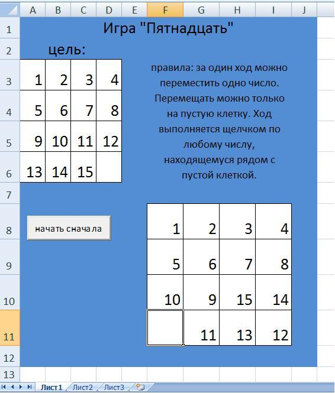
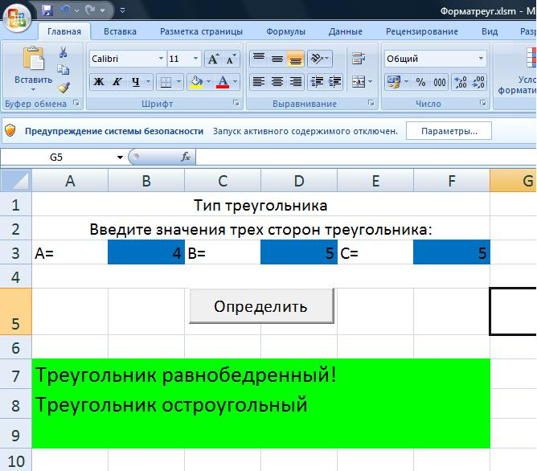
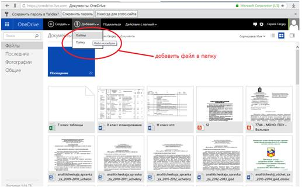
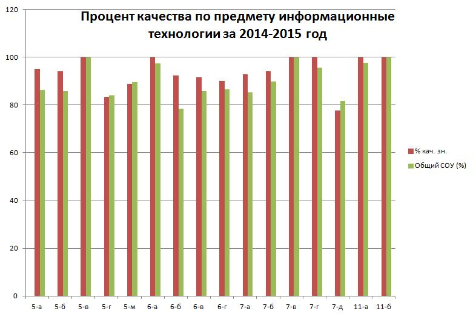
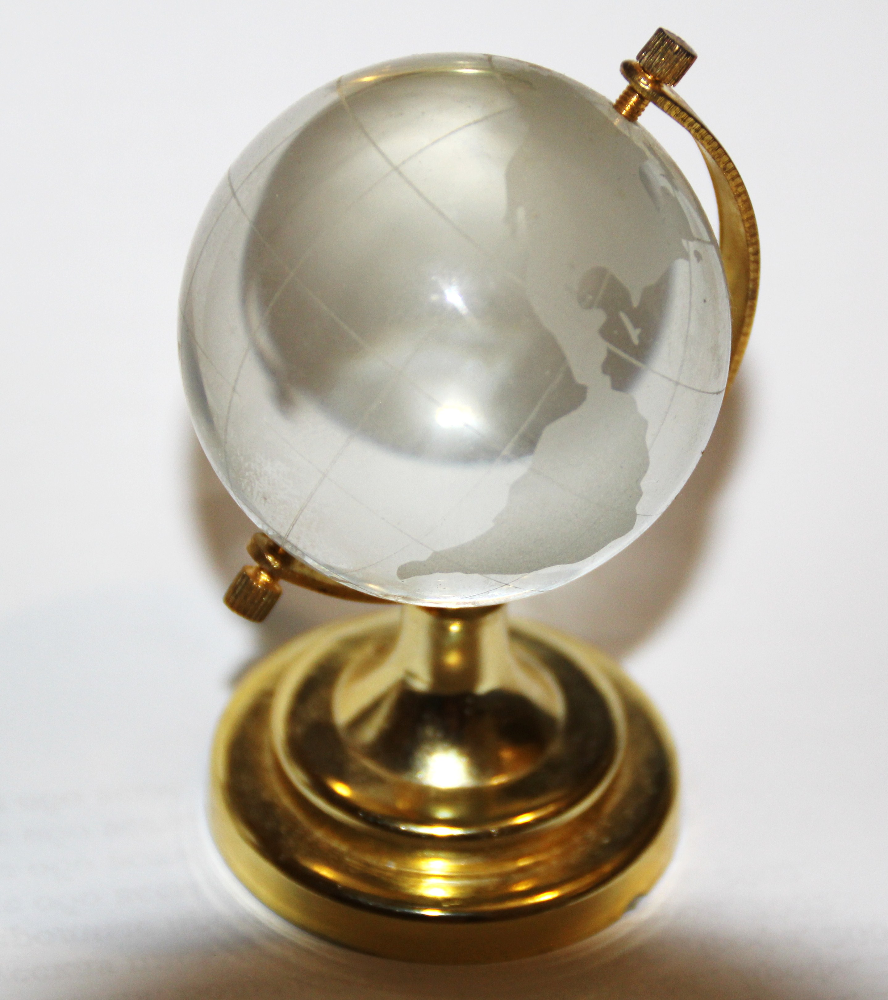

Анализ работы учителя
Сажина Сергея Михайловича
в период с 2011 по 2016 год
Цель анализа
Самооценка профессиональной деятельности
за межаттестационный период.
Задачи
- Определение круга проблем;
- выбор педагогических методик для их решения;
- оценка результатов;
- планирование дальнейшей работы.
Основные направления деятельности
- Создание дидактических материалов;
- воспитание культуры использования Интернет-ресурсов;
- обучение корректным приемам работы;
- развитие общеучебных навыков у учащихся 5-6 классов;
- развитие профессиональных навыков у старших школьников;
- расширение границ образовательного пространства.
Развитие интуитивного мышления
- Чувствительное;
- рациональное;
- эйдетическое.
Создание положительной мотивации

-
Возможность поиграть в игру,
созданную своими руками; -
убеждение в актуальности и
полезности нового знания; - проектная деятельность;
-
задания, предполагающие
разные способы выполнения; -
доступность выполнения
для каждого.
Межпредметные проекты с использованием цифровых технологий

-
Решение математических задач
средствами Excel, Pascal, VB; -
создание самопроверяющихся
кроссвордов, тестов; - создание презентаций.
Изучение основ программирования
-
Исполнители: черепаха,
робот, чертежник; -
Pascal, Visual Basic,
VBA for application, Python.
Элементы дистанционного обучения

-
Дистанционный зачет, тест,
контрольная; -
электронное портфолио
учащегося; - обучающее видео.
Качество обучения

Участие в профессиональных конкурсах

Городской конкурс профессионального
мастерства «Хрустальный глобус – 2012».
Победа в номинации
«Педагогическое вдохновение».